Restaurant Y Polleria "La Amistad"
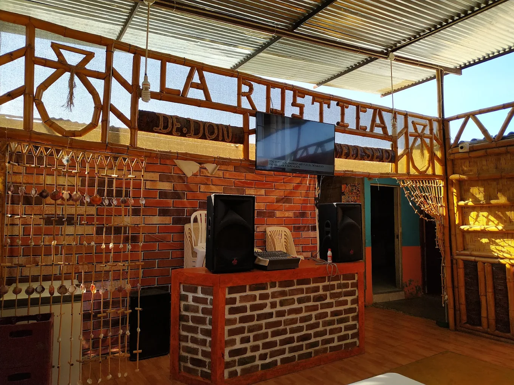
Restaurante muy acogedor para toda la familia.
La provincia de Morropón es una de las ocho provincias que conforman el departamento de Piura en el norte del Perú. Limita por el norte con la provincia de Ayabaca, por el este con la provincia de Huancabamba, por el sur con el departamento de Lambayeque y por el oeste con la provincia de Piura. Desde el punto de vista de la jerarquía de la Iglesia católica, forma parte de la diócesis de Chulucanas. Morropón es una provincia ubicada en la parte occidental de los andes piuranos. El territorio se encuentra dividido en dos por el Río Piura y cuenta con una amplia diversidad de ecosistemas. La provincia también es conocida como la Cuna del Tondero y la Cumanana. Fue creada como provincia por Ley N° 8174 aprobada el 21 de enero de 1936 y promulgada el 31 de enero de 1936.
Morropón es conocida por sus cultores de géneros musicales como el tondero y la cumanana; en que guitarristas y poetas campesinos cantan, en sus creaciones, nostalgias de tiempos pasados. También es conocida por sus artesanos que trabajan la plata con la iconografía local.

Restaurante muy acogedor para toda la familia.
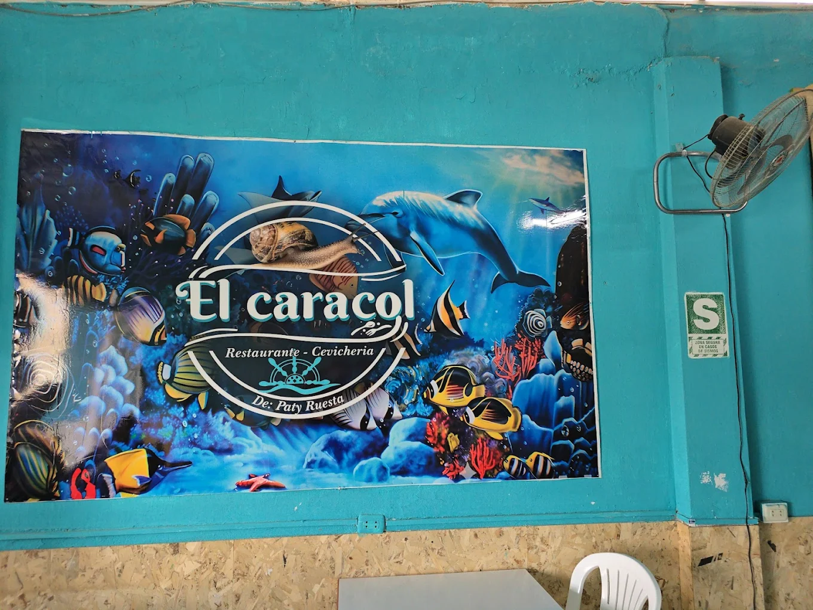
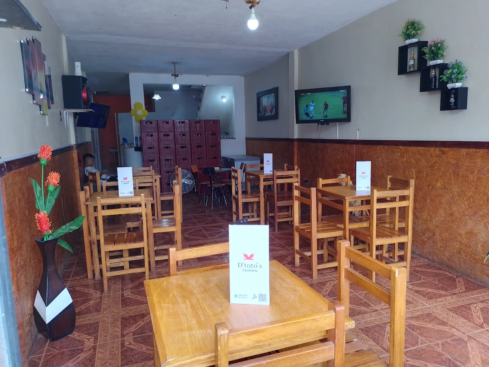
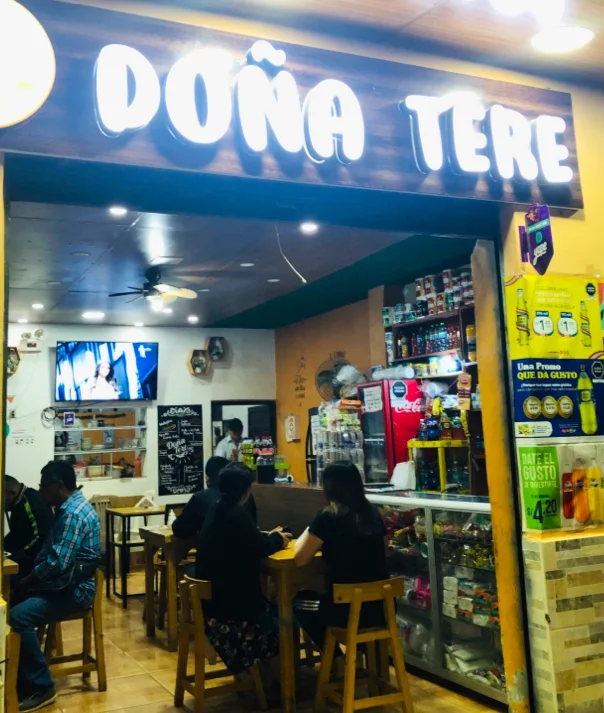
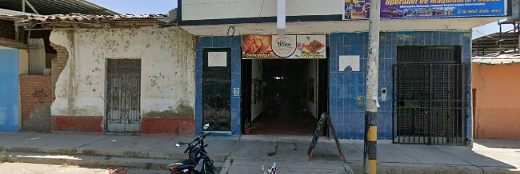
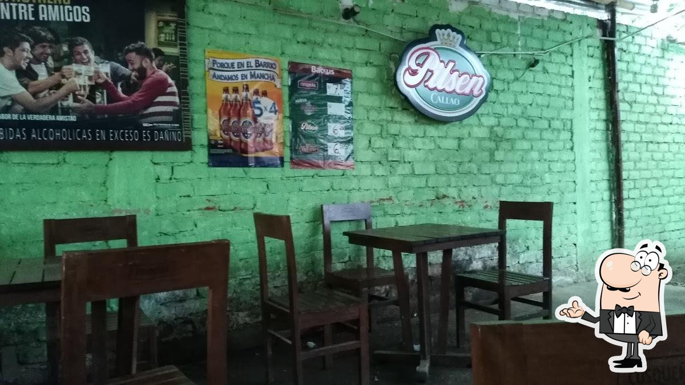
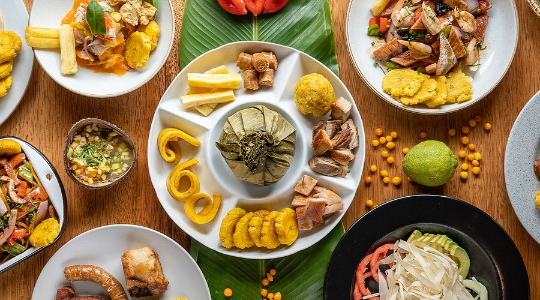
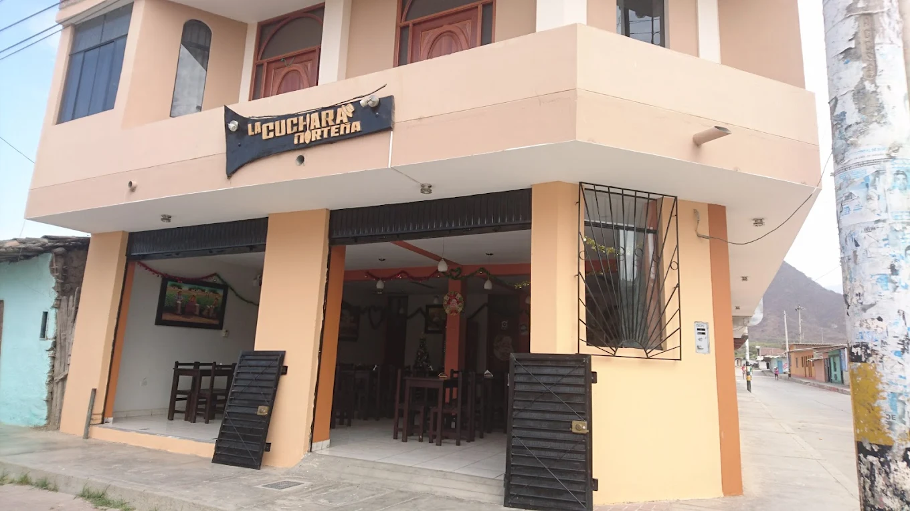
Tenemos lugares para pasarla en familia, si eres turista y quieres conocer mas de ellos, te los muestro en este articulo "Seleccion tu favorito"


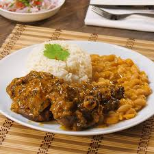
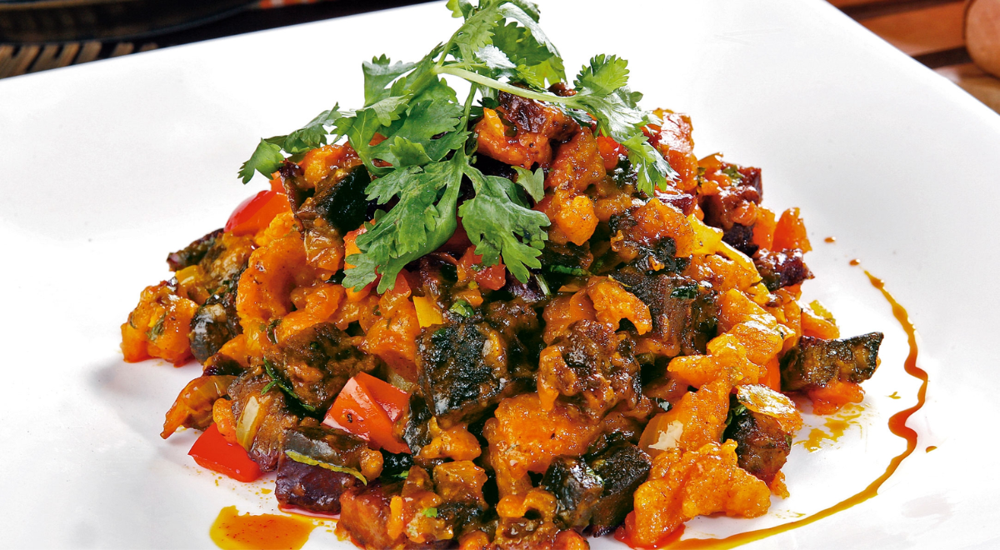

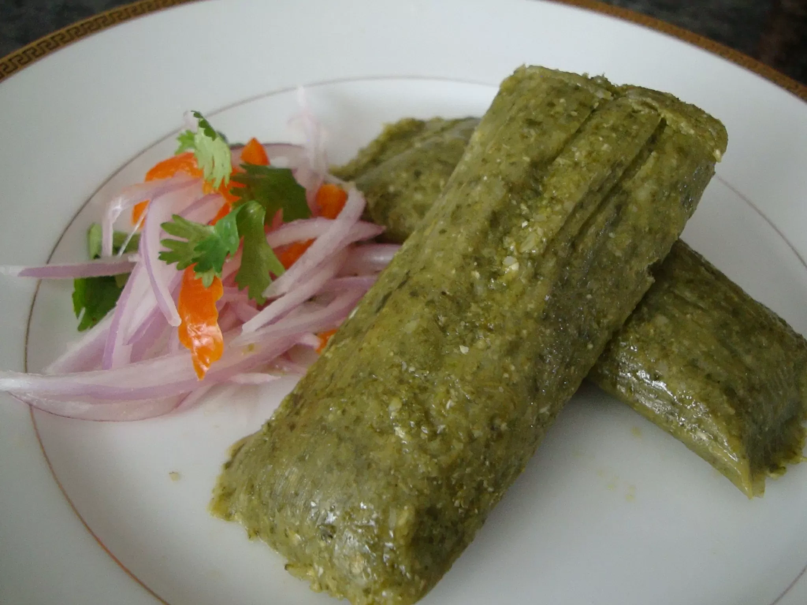
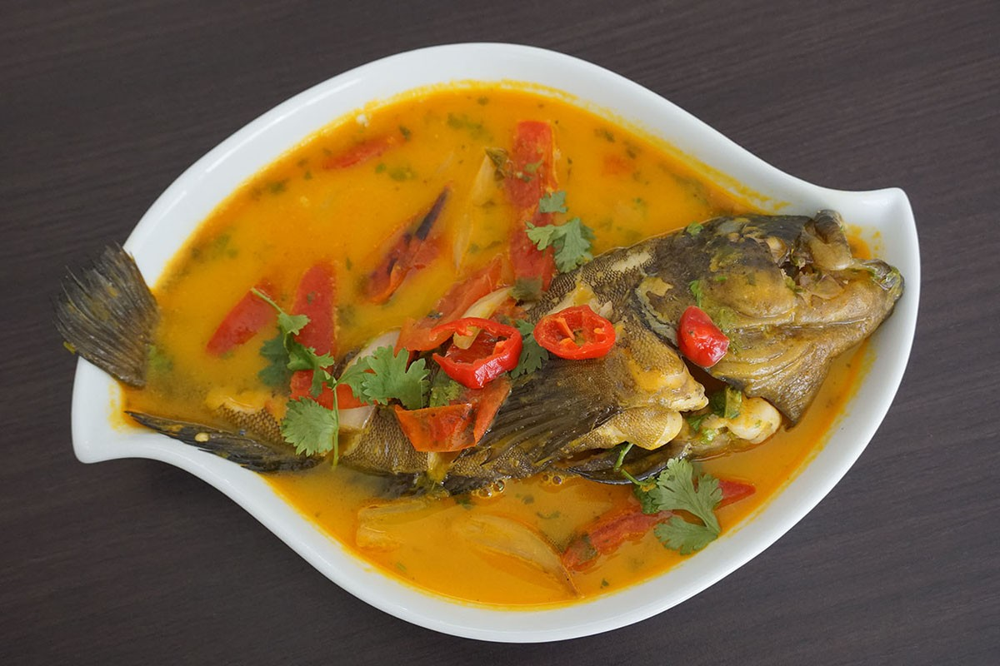